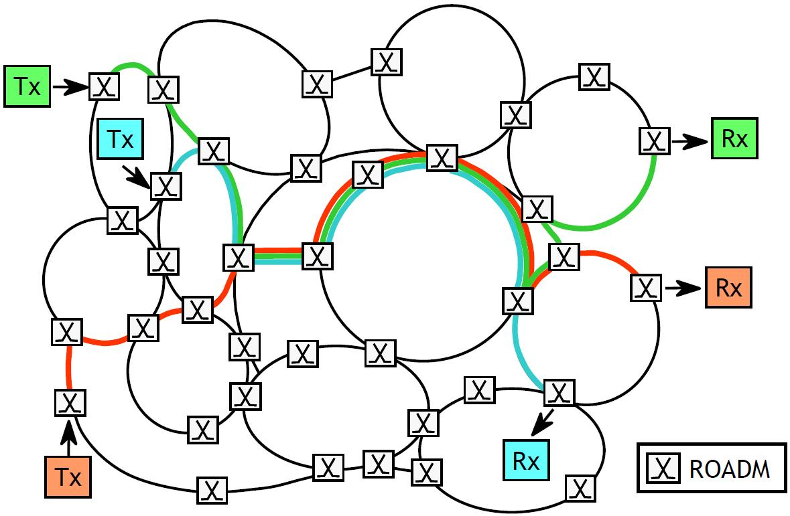
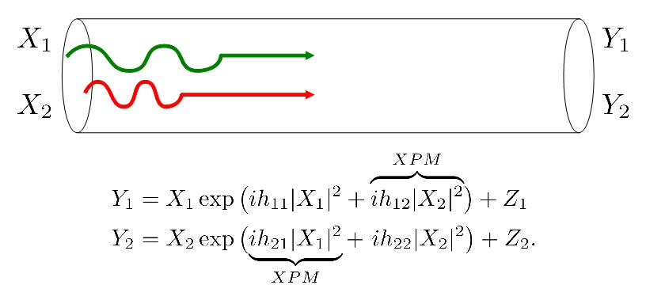
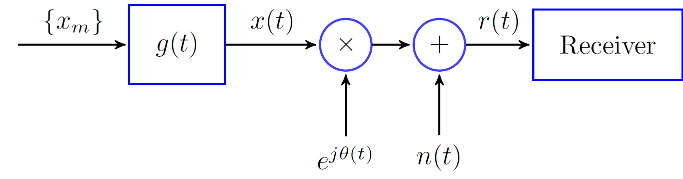

|
Hassan GhozlanDepartment of Electrical Engineering, Mail Address: ghozlan@usc.edu |
Resumé | Bio | Research | Teaching | Publications | Activities | Links
Resumé
Bio
- Ph.D. student at the Department of Electrical Engineering in the University of Southern California (USC) since August 2009. I am with the Communication Sciences Institute (CSI) and my advisor is Gerhard Kramer.
- May 2011 - July 2011 and Jan 2012 - May 2013: Visting student at the Institute for Communications Engineering (LNT) at the Technical University of Munich (TUM).
- 2007 - 2009: Research assistant at the Wireless Intelligent Networks Center (WINC) at Nile University.
- In 2009, received MS degree in "Wireless Communications" from Nile University, Egypt.
- In 2007, got BS degree in "Electronics and Communication Engineering" from Cairo University, Egypt.
Research
Interests: Communication Theory, Information Theory, Optical Communication, Wireless Communication, Relaying and Cooperative Communication.
-
Capacity Limits of Optical Fiber Networks
The increase in traffic demand and the advances in optical technology over the past two decades made determining the capacity of optical fiber networks of great interest. The optical fiber channel suffers from three main impairments of different nature: noise, dispersion, and Kerr non-linearity. The interaction between these three phenomena makes the problem of estimating the capacity challenging. We study the scenario of multi-user communication using the wavelength-division multiplexing (WDM) technology. Relying on the coupled Non-linear Schroedinger (NLS) equations we develop simplified channel models that capture effects such as cross-phase modulation (XPM) and group velocity mismatch (GVM). The effect of XPM is that an amplitude variation on one carrier induces a phase variation on the other carrier, whereas the main impact of GVM is creating memory in the channel.
  Optically-Routed NetworkInterference Channel Model (Simplified, No GVM) -
Phase Noise Channels
Communication systems often suffer from phase noise that arises, e.g., due to the instability of RF oscillators in satellite communication and microwave links or due to the instability of the laser oscilltors in optical fiber communication . We study a waveform channel where the transmitted signal is corrupted by Wiener phase noise and additive white Gaussian noise (AWGN). We develop a discrete-time channel model that takes into account the effect of filtering on the phase noise. The model is based on a multi-sample receiver, i.e., a receiver that can sample at a rate higher than the signaling rate. We observe that oversampling at the receiver is beneficial for both strong and weak phase noise at high signal-to-noise ratios.
 Waveform Channel with Phase Noise and AWGN
Teaching
- SoSe11 at TUM: Advanced Topics in Communication Engineering (Data Networks). Instructor: Prof. Anthony Epremides.
Publications
Conference Papers:
- H. Ghozlan and G. Kramer, "Multi-sample Receivers Increase Information Rates for Wiener Phase Noise Channels,'' submitted to the Global Communications Conference, Atlanta, GA, December 9-13, 2013. [preprint]
- H. Ghozlan and G. Kramer, "On Wiener phase noise channels at high signal-to-noise ratio,'' IEEE International Symposium on Information Theory, Istanbul, Turkey, July 7-12, 2013. [preprint]
- H. Ghozlan and G. Kramer, "Interference focusing for simplified optical fiber models with dispersion,'' IEEE International Symposium on Information Theory, Saint Petersburg, Russia, July 31-Aug 5, 2011.
- H. Ghozlan and G. Kramer, "Interference focusing for mitigating cross-phase modulation in a simplified optical fiber model,'' IEEE International Symposium on Information Theory, Austin, TX, June 13-18, 2010.
- H. Ghozlan, Y. Mohasseb, H. El Gamal, G. Kramer, "The MIMO Wireless Switch: Relaying can increase the multiplexing gain,'' IEEE International Symposium on Information Theory, Seoul, Korea, June 28-July 3, 2009.
Activities: Talks and Posters
- Poster: "Phase Noise Channels", 16th Joint Conference on Communications and Coding (JCCC), March 6-8, 2013, Holzgau, Austria
- Talk: "Interference Focusing for Simplified Optical Fiber Models with Dispersion", June 15, 2011, LNT, Technical University of Munich, Germany (LNT News).
- Poster: "Interference Focusing", 1st Ming Hsieh Department of Electrical Engineering Research Festival (hosted by the Ming Hsieh Institute), April 29, 2011, University of Southern California, Los Angeles, CA
- Poster: "Interference Focusing for Mitigating Cross-Phase Modulation in a Simplified Optical Fiber Model", 2010 North American School of Information Theory, August 5-8, 2010, University of Southern California, Los Angeles, CA
Links
- Communication Sciences Institute
- Ming Hsieh Department of Electrical Engineering
- Viterbi School of Engineering
- University of Southern California